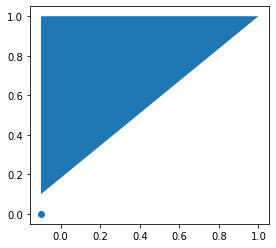
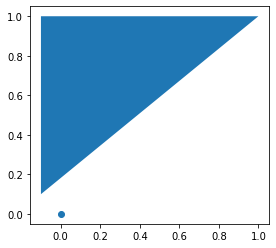

import geopandas as gpd
import pandas as pdGeometry Validation Tutorial
A basic introduction to using geometry validation

Basic Usage
Loading a geojson with invalid geometries
gdf = gpd.read_file("../data/broken.geojson")
gdf = pd.concat([gdf, gpd.GeoDataFrame({"geometry": [None], "id": "null geometry"})])
gdf/home/jt/.cache/pypoetry/virtualenvs/geowrangler-U9oiUrW5-py3.9/lib/python3.9/site-packages/geopandas/_compat.py:111: UserWarning: The Shapely GEOS version (3.10.2-CAPI-1.16.0) is incompatible with the GEOS version PyGEOS was compiled with (3.10.1-CAPI-1.16.0). Conversions between both will be slow.
warnings.warn(| id | geometry | |
|---|---|---|
| 0 | valid | POLYGON ((0.00000 0.00000, 1.00000 0.00000, 0.... |
| 1 | out_of_crs_bounds | POLYGON ((200.00000 0.00000, 0.00000 1.00000, ... |
| 2 | misoriented | POLYGON ((0.00000 0.00000, 0.00000 1.00000, 1.... |
| 3 | self_intersecting | POLYGON ((0.00000 0.00000, 1.00000 1.00000, 2.... |
| 4 | counterclockwise | POLYGON ((0.00000 0.00000, 1.00000 0.00000, 1.... |
| 5 | sliver | POLYGON ((0.00000 0.00000, 0.00000 1.00000, 0.... |
| 6 | holes | POLYGON ((0.00000 0.00000, 1.00000 0.00000, 1.... |
| 7 | non-closed polygon | POLYGON ((0.00000 0.00000, 1.00000 0.00000, 1.... |
| 8 | multipolygon | MULTIPOLYGON (((0.00000 0.00000, 1.00000 0.000... |
| 9 | polygon z | POLYGON Z ((0.00000 0.00000 1.00000, 1.00000 0... |
| 10 | complex self-intersecting polygon | POLYGON ((0.00000 0.00000, 5.00000 0.00000, 5.... |
| 0 | null geometry | None |
We then run Geometry Validation. By default, these append a new column if the validation fails, applies a fix if possible, and raises a warning if no fix is available.
from geowrangler.validation import GeometryValidationGeometryValidation(gdf)
validated_gdf = GeometryValidation(gdf).validate_all()
validated_gdf/home/jt/repos/geowrangler/geowrangler/validation.py:107: UserWarning: Found null geometries
warnings.warn(self.warning_message)
/home/jt/repos/geowrangler/geowrangler/validation.py:107: UserWarning: Found geometries out of bounds from crs
warnings.warn(self.warning_message)
/home/jt/repos/geowrangler/geowrangler/validation.py:107: UserWarning: Found geometries with area equals or less than zero
warnings.warn(self.warning_message)| id | geometry | is_not_null | is_not_self_intersecting | is_oriented_properly | is_within_crs_bounds | area_is_not_zero | |
|---|---|---|---|---|---|---|---|
| 0 | valid | POLYGON ((0.00000 0.00000, 1.00000 0.00000, 0.... | True | True | True | True | True |
| 1 | out_of_crs_bounds | POLYGON ((200.00000 0.00000, 0.00000 1.00000, ... | True | True | True | False | True |
| 2 | misoriented | POLYGON ((0.00000 0.00000, 1.00000 0.00000, 1.... | True | True | False | True | True |
| 3 | self_intersecting | MULTIPOLYGON (((0.00000 2.00000, 0.00000 0.000... | True | False | False | True | True |
| 4 | counterclockwise | POLYGON ((0.00000 0.00000, 1.00000 0.00000, 1.... | True | True | True | True | True |
| 5 | sliver | POLYGON ((0.00000 0.00000, 0.00000 1.00000, 0.... | True | True | True | True | False |
| 6 | holes | POLYGON ((0.00000 0.00000, 1.00000 0.00000, 1.... | True | True | True | True | True |
| 7 | non-closed polygon | POLYGON ((0.00000 0.00000, 1.00000 0.00000, 1.... | True | True | True | True | True |
| 8 | multipolygon | MULTIPOLYGON (((0.00000 0.00000, 1.00000 0.000... | True | True | True | True | True |
| 9 | polygon z | POLYGON Z ((0.00000 0.00000 1.00000, 1.00000 0... | True | True | True | True | True |
| 10 | complex self-intersecting polygon | POLYGON ((0.00000 5.00000, 0.00000 2.50000, 0.... | True | False | False | True | True |
| 0 | null geometry | None | False | True | True | True | True |
gdf.iloc[5].geometry.area0.0Running the validation again shows that validation applies some fixes
GeometryValidation(validated_gdf[["id", "geometry"]]).validate_all()/home/jt/repos/geowrangler/geowrangler/validation.py:107: UserWarning: Found null geometries
warnings.warn(self.warning_message)
/home/jt/repos/geowrangler/geowrangler/validation.py:107: UserWarning: Found geometries out of bounds from crs
warnings.warn(self.warning_message)
/home/jt/repos/geowrangler/geowrangler/validation.py:107: UserWarning: Found geometries with area equals or less than zero
warnings.warn(self.warning_message)| id | geometry | is_not_null | is_not_self_intersecting | is_oriented_properly | is_within_crs_bounds | area_is_not_zero | |
|---|---|---|---|---|---|---|---|
| 0 | valid | POLYGON ((0.00000 0.00000, 1.00000 0.00000, 0.... | True | True | True | True | True |
| 1 | out_of_crs_bounds | POLYGON ((200.00000 0.00000, 0.00000 1.00000, ... | True | True | True | False | True |
| 2 | misoriented | POLYGON ((0.00000 0.00000, 1.00000 0.00000, 1.... | True | True | True | True | True |
| 3 | self_intersecting | MULTIPOLYGON (((0.00000 2.00000, 0.00000 0.000... | True | True | True | True | True |
| 4 | counterclockwise | POLYGON ((0.00000 0.00000, 1.00000 0.00000, 1.... | True | True | True | True | True |
| 5 | sliver | POLYGON ((0.00000 0.00000, 0.00000 1.00000, 0.... | True | True | True | True | False |
| 6 | holes | POLYGON ((0.00000 0.00000, 1.00000 0.00000, 1.... | True | True | True | True | True |
| 7 | non-closed polygon | POLYGON ((0.00000 0.00000, 1.00000 0.00000, 1.... | True | True | True | True | True |
| 8 | multipolygon | MULTIPOLYGON (((0.00000 0.00000, 1.00000 0.000... | True | True | True | True | True |
| 9 | polygon z | POLYGON Z ((0.00000 0.00000 1.00000, 1.00000 0... | True | True | True | True | True |
| 10 | complex self-intersecting polygon | POLYGON ((0.00000 5.00000, 0.00000 2.50000, 0.... | True | True | True | True | True |
| 0 | null geometry | None | False | True | True | True | True |
Passing Validators
You can pass a list of Validators to selective run validators, the default uses the following - NullValidator - Checks if geometry is null. No fix - OrientationValidator - Check the orientation of the outer most ring of each polygon is counter clockwise. Converts it to counter-clockwise if as the fix - SelfIntersectingValidator - Checks if the polygons is self intersecting. Runs shapely.validation.make_valid as the fix. - CrsBoundsValidator - Checks if bounds of each geometry are within the CRS. No fix - AreaValidator - Checks if polygons or multipolygon have an area greater than zero
from geowrangler.validation import NullValidator, SelfIntersectingValidatorvalidated_gdf = GeometryValidation(
gdf, validators=[NullValidator, SelfIntersectingValidator]
).validate_all()
validated_gdf/home/jt/repos/geowrangler/geowrangler/validation.py:107: UserWarning: Found null geometries
warnings.warn(self.warning_message)| id | geometry | is_not_null | is_not_self_intersecting | |
|---|---|---|---|---|
| 0 | valid | POLYGON ((0.00000 0.00000, 1.00000 0.00000, 0.... | True | True |
| 1 | out_of_crs_bounds | POLYGON ((200.00000 0.00000, 0.00000 1.00000, ... | True | True |
| 2 | misoriented | POLYGON ((0.00000 0.00000, 0.00000 1.00000, 1.... | True | True |
| 3 | self_intersecting | MULTIPOLYGON (((0.00000 2.00000, 1.00000 1.000... | True | False |
| 4 | counterclockwise | POLYGON ((0.00000 0.00000, 1.00000 0.00000, 1.... | True | True |
| 5 | sliver | POLYGON ((0.00000 0.00000, 0.00000 1.00000, 0.... | True | True |
| 6 | holes | POLYGON ((0.00000 0.00000, 1.00000 0.00000, 1.... | True | True |
| 7 | non-closed polygon | POLYGON ((0.00000 0.00000, 1.00000 0.00000, 1.... | True | True |
| 8 | multipolygon | MULTIPOLYGON (((0.00000 0.00000, 1.00000 0.000... | True | True |
| 9 | polygon z | POLYGON Z ((0.00000 0.00000 1.00000, 1.00000 0... | True | True |
| 10 | complex self-intersecting polygon | POLYGON ((0.00000 5.00000, 5.00000 5.00000, 5.... | True | False |
| 0 | null geometry | None | False | True |
You can also use a single validator at a time
SelfIntersectingValidator().validate(gdf)| id | geometry | is_not_self_intersecting | |
|---|---|---|---|
| 0 | valid | POLYGON ((0.00000 0.00000, 1.00000 0.00000, 0.... | True |
| 1 | out_of_crs_bounds | POLYGON ((200.00000 0.00000, 0.00000 1.00000, ... | True |
| 2 | misoriented | POLYGON ((0.00000 0.00000, 0.00000 1.00000, 1.... | True |
| 3 | self_intersecting | MULTIPOLYGON (((0.00000 2.00000, 1.00000 1.000... | False |
| 4 | counterclockwise | POLYGON ((0.00000 0.00000, 1.00000 0.00000, 1.... | True |
| 5 | sliver | POLYGON ((0.00000 0.00000, 0.00000 1.00000, 0.... | True |
| 6 | holes | POLYGON ((0.00000 0.00000, 1.00000 0.00000, 1.... | True |
| 7 | non-closed polygon | POLYGON ((0.00000 0.00000, 1.00000 0.00000, 1.... | True |
| 8 | multipolygon | MULTIPOLYGON (((0.00000 0.00000, 1.00000 0.000... | True |
| 9 | polygon z | POLYGON Z ((0.00000 0.00000 1.00000, 1.00000 0... | True |
| 10 | complex self-intersecting polygon | POLYGON ((0.00000 5.00000, 5.00000 5.00000, 5.... | False |
| 0 | null geometry | None | True |
Building your own validator
Let’s build a validator that check if the is point below 0 in the x axis, if that is the case we set it to 0
from shapely.geometry.point import Point
from shapely.geometry.polygon import Polygon
from geowrangler.validation import BaseValidatorclass PointValidator(BaseValidator):
validator_column_name = "is_not_point"
geometry_types = ["Point"] # What kind of geometies to validate and fix
def check(self, geometry):
# Checks if the geometry is valid. If False, applies the fix
return geometry.x > 0
def fix(self, geometry):
return Point(0, geometry.y)gdf = gpd.GeoDataFrame(
geometry=[Point(-0.1, 0), Polygon([(-0.1, 0.1), (-0.1, 1), (1, 1)])]
)
validated_gdf = PointValidator().validate(gdf)
ax = gdf.plot()
ax = validated_gdf.plot()

There are several cases where no fix is available or you want to fix them manualy, we can create a validator that warns the users.
from shapely.geometry.point import Point
from shapely.geometry.polygon import Polygon
from geowrangler.validation import BaseValidatorclass PointValidator(BaseValidator):
validator_column_name = "is_not_point"
fix_available = False # Telling the validator that there is no available fixes
warning_message = "Found geometries that are points below 0" # warning message
geometry_types = ["Point"] # What kind of geometies to validate and fix
def check(self, geometry):
# Checks if the geometry is valid. If False, warn the user
return geometry.x > 0
gdf = gpd.GeoDataFrame(geometry=[Point(-0.1, 0), Polygon([(0, 0.0), (0, 1), (1, 1)])])
validated_gdf = PointValidator().validate(gdf)
validated_gdf/home/jt/repos/geowrangler/geowrangler/validation.py:107: UserWarning: Found geometries that are points below 0
warnings.warn(self.warning_message)| geometry | is_not_point | |
|---|---|---|
| 0 | POINT (-0.10000 0.00000) | False |
| 1 | POLYGON ((0.00000 0.00000, 0.00000 1.00000, 1.... | True |